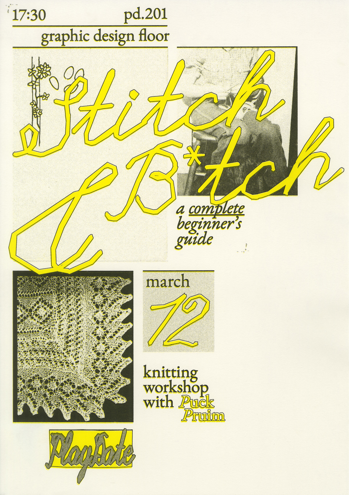
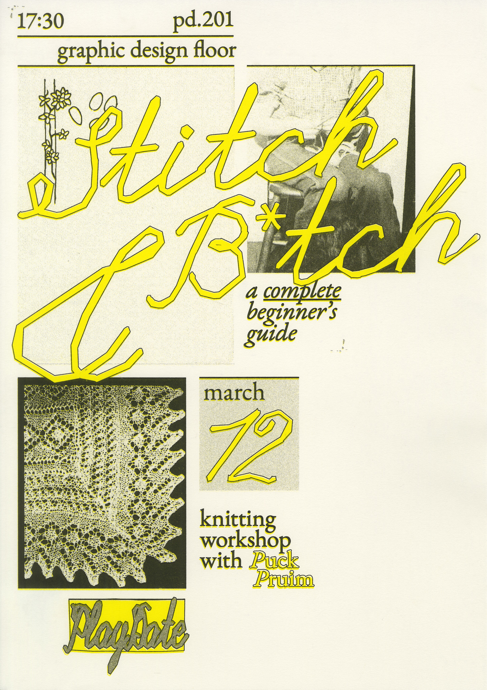
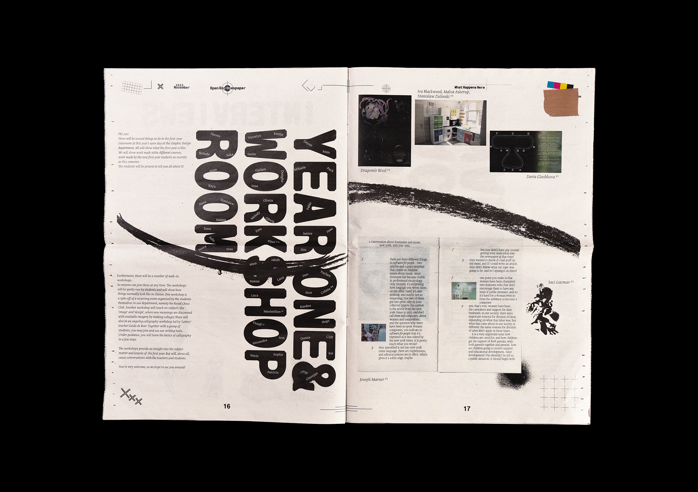
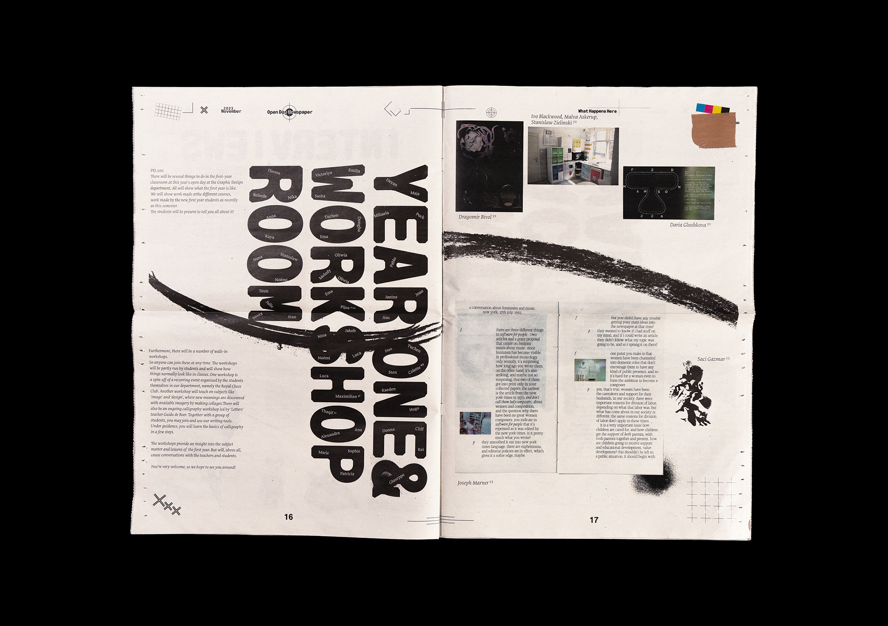

-
Playdate, 2025–
Playdate is a student-led series of peer-to-peer workshops that I co-host with Alexandra Vitko at the Royal Academy of Art (KABK). Born out of a desire to explore what’s missing from the traditional curriculum, we're trying to create space for interdisciplinary exchange, hands-on learning, and informal critical discussion. Every two weeks, we invite fellow students to lead workshops in their own fields of interest – from ceramics and sound editing to set design and publishing – offering an open, collaborative format for skill-sharing and community building.

 

-
Rewire Reflections, 2025
Rewire Reflections is a zine created as part of Rewire Festival’s 2025 Context programme, exploring the sonic textures of the festival. The publication features reflections on body, sound, performance, and multicultural aspects of the lineup, offering new ways of thinking about listening and connection. Designed and produced in collaboration with Teun Hanselman, Puck Pruim, Alexandra Vitko, Pyotr Golub, and Nina Meljac.
-
Beach Walk #2, 2024
-
Rest is The Softest Form of Resistance, 2024
In this collaborative research project, Alexandra Vitko and I are exploring rest as a form of resistance to capitalism-driven exhaustion. We approach the topic through our personal experiences – one too anxious to sleep, the other too drained to wake up – expressed through both writing and materials: cold, rigid metal versus soft, inviting wool. The outcome is a curated shelf of texts – essays, poems, and reflections by ourselves and others – paired with handcrafted objects made in response to the readings.
-
Local Publishing, 2024
Website on autonomus publishing practices;(Mobile version to be added).

-
Four Times Through the Labyrinth, 2024
Redesign of a book by Jan Wenzel and Olaf Nicolai – a transcript of four lectures originally held in Leipzig in 2010. This version reimagines the book as a scrollable PDF, drawing from the visual language of digital presentations. The design translates that experience into print: images and text are arranged in continuous vertical columns, guiding the reader through the content in a clear, linear flow.
-
Utopia, 2024
Redesign of Bernadette Mayer's book Utopia through the prism of a child.
-
Dancing of Soft of Conversing collective poster, 2024
Series of posters for typography class Dancing of Soft of Conversing exhibition.
-
What's There to Stay?, 2023
A collection of objects, of no particular significance, that I can't let go of.
-
Glass Pieces Animation, 2024
After Effects Tracking Experiment.
-
The Stalin Epigram, 2024
Reworked version of Osip Mandelstam's poem.
-
Dasha×Sasha, 2023
A quick animation of my friend & I meeting for the first time in months.
-
KABK Graphic Design Open Day Newspaper, 2023
Newspaper design & navigation system for the Open Day at Royal Academy of Art, The Hague.
In collaboration with: Benaiah French, Cliff Vonk and Marie Filatova. 

-
Stereo Doc Film Festival, 2023
Animation for an imaginary film festival.
-
Beach Walk, 2023
Cyanotype animation video.
-
Sleepy Mushroom, 2023
Midnight animation experiment.
-
Football Tournament Announcement, 2020
An invitation to friends' football tournament.